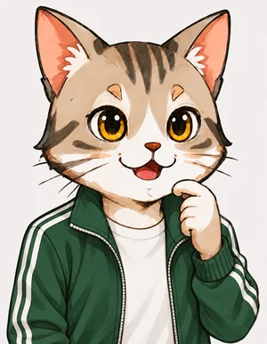
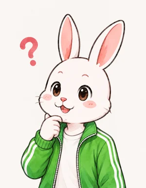

STAGE 7
縮めると速く回る
角運動量と慣性テンソル
🎯 ミッション
角運動量 ＝ 慣性モーメント × 回る速さ の関係を使って、空中で体を縮めると速く回り、脚を伸ばすと遅くなる理由を説明しよう。回す軸の向きで回しにくさが変わることを表す慣性テンソルを計算し、900が720より難しい理由を数で言えれば合格。
未達成

ねこ博士
前のステージで、空中では重心が放物線から外れられないことを確かめた。今日は回転の話だ。チート900は、空中で体を大きくひねりながら蹴る。空中では床を押せないのに、なぜ回り続けられるのか。そして、なぜ脚を伸ばした瞬間に回転がゆっくりになるのか。フィギュアスケートで、腕を広げてゆっくり回っていた選手が、腕を胸に引き寄せると急に速く回るのを見たことがあるかい？
うさ美
あります。体を小さくまとめると速くなるんですよね。でも、誰も押していないのに速くなるのは、ちょっと不思議です。
ねこ博士
その「不思議」を数で説明しよう。まず、重さ m のおもりが、軸から距離 r の所を回っているとする。1秒に回る角度を角速度 ω（オメガ）という。角度をラジアン（半径と同じ長さの弧に対する角度。1回転が 2π ≈ 6.28）で測ると、おもりの速さは v ＝ rω だ。このとき、
角運動量 L ＝ m × r × v ＝ m r² ω
を「回る勢い」と考える。外から回す力（トルク）がはたらかないと、L は変わらない。これを角運動量の保存という。
角運動量 L ＝ m × r × v ＝ m r² ω
を「回る勢い」と考える。外から回す力（トルク）がはたらかないと、L は変わらない。これを角運動量の保存という。
うさ美
おもりがいくつもあるときは、それぞれの m r² ω を足すんですね。全部が同じ ω で回っていれば、L ＝ (m₁r₁² ＋ m₂r₂² ＋ …) × ω です。
ねこ博士
その通り。かっこの中、I ＝ Σ m r²（Σ は「全部足す」という記号）を慣性モーメントという。回しにくさを表す数だ。L ＝ Iω で L が変わらないなら、ω ＝ L ÷ I。I が半分になれば ω は2倍になる。r が2乗で効くことに注意してほしい。腕を半分の距離まで引き寄せると、その腕の m r² は4分の1になる。下の図で試してごらん。
上から見た図。真ん中が胴（40 kg、軸から 0.15 m に広がっているとする）、左右が腕と脚をまとめたおもり（10 kg ずつ）。角運動量 L は最初の値のまま変えずに、r を変えたときの慣性モーメント I と回る速さ ω ＝ L ÷ I を計算する
うさ美
r を 0.8 m から 0.3 m にすると、1秒に回る回数が約 0.5 回転から約 2.5 回転へ、5倍くらいになりました。I が約 13.7 kg·m² から約 2.7 kg·m² へ、5分の1に下がっています。
ねこ博士
では、チート900のデータで確かめよう。体の各部分を、前のステージの重心の計算と同じ重さの割合のおもりとみなし（体重は 60 kg とした）、重心を通る縦の軸のまわりの I と L を毎コマ計算した。各部分の速さは、前後のコマの位置の差から出す。
緑の帯が空中（離陸 0.87 秒〜着地 1.38 秒）。上のグラフは I（茶）と L（ピンク）、下のグラフは回る速さ ω（1秒に何度）。右上の小さな図は、そのコマの体を上から見たところ
うさ美
空中の区間を見ると、離陸の直後は I が約 1.1 kg·m² で、1秒に約 860° 回っています。蹴り脚を伸ばすインパクトのころは I が約 2.8 kg·m² に増えて、約 440° に下がりました。I が2.5倍くらいになって、速さが半分くらいです。
ねこ博士
L のほうは、空中で 16〜21 くらいの間にある。本当なら一定のはずだが、体を棒とおもりで大まかに表していることや、動画に合わせて形を直したことで、少し揺れが残っている。アニメーションを作るときは、空中で L が大きく変わらないように直す計算も入れた。地面にいる間は、床を足でねじって L を増やしたり減らしたりできる。離陸前の踏み込みで L を作り、空中ではそれを使って回るだけなんだ。

うさ美
ひとつ気になります。チート900では体が傾いて、脚も斜めに伸びます。縦の軸だけで考えていいんですか？
ねこ博士
よいところに気づいたね。実は、回しにくさはどの軸のまわりに回すかで変わる。鉛筆を思い浮かべてごらん。長い向きを軸にして指でくるくる回すのは簡単だが、真ん中をつまんで端と端が円を描くように回すのは、ずっと回しにくい。軸の向きを長さ1のベクトル n で表すと、その軸のまわりの I は、各おもりについて「軸からの距離の2乗」を足したものだ。重心からおもりへのベクトルを r とすると、軸からの距離の2乗は |r|² − (r·n)²（ステージ2の内積で、r のうち軸に沿った部分を引いたもの）。これを整理すると、
I(n) ＝ nᵀ 𝐈 n、 𝐈 ＝ Σ m (|r|² E − r rᵀ)
と書ける。E は対角に1が並ぶ3×3の表（単位行列）、r rᵀ は r の成分どうしを掛けた3×3の表だ。この 𝐈 を慣性テンソルという。
I(n) ＝ nᵀ 𝐈 n、 𝐈 ＝ Σ m (|r|² E − r rᵀ)
と書ける。E は対角に1が並ぶ3×3の表（単位行列）、r rᵀ は r の成分どうしを掛けた3×3の表だ。この 𝐈 を慣性テンソルという。
うさ美
「nᵀ 𝐈 n」は、ステージ3の回転行列みたいに 𝐈 を n に掛けて、その結果と n の内積をとる、ということですか？
ねこ博士
そう読めばいい。3×3の表をひとつ作っておけば、どの向きの軸についても、掛け算と内積だけで回しにくさが出る。表の対角に並ぶ3つの数は、x 軸・y 軸・z 軸のまわりの I そのもの。対角以外の数は、体が斜めに広がっているときに 0 でなくなる。そして、対角以外がちょうど 0 になる3つの直交する軸を必ず見つけられる。それを主軸という。主軸のまわりでは、回す勢いの向きと回る向きがそろうが、それ以外の軸では L ＝ 𝐈ω の L と ω の向きがずれて、回転がぶれていく。
ピンクの線が選んだ回転軸（重心を通る）。細い3本の線が主軸（太いほど回しにくい）。読み取り欄の 3×3 の表が慣性テンソル 𝐈（単位 kg·m²、行と列の順は x＝進行方向・y＝上・z＝的の方向）。軸の傾き 90° が真上向き。図はドラッグで回せる
うさ美
インパクトのコマでは、縦の軸のまわりが約 2.8 kg·m² でいちばん回しやすくて、進行方向の軸のまわりは約 8.8 kg·m² です。体が縦に長いので、側転のように回すのは3倍くらい回しにくいんですね。
ねこ博士
そうだ。さて最後に、720 と 900 の違いを考えよう。技の名前の数は、体が回る角度の合計だ。900 は 720 より 180°、つまり半回転多く回る。地面の上で回る角度が同じなら、その 180° は空中で余分に回らなければならない。空中で回る角度は、毎コマの ω を足し合わせたもの、つまり「L ÷ I を時間で足したもの」だ。このチート900は、空中の約 0.52 秒で約 410° 回っている。
うさ美
滞空時間はステージ6で見た通り、離陸の速さでほぼ決まってしまうので、あまり延ばせません。そうすると、余分の 180° を回るには、L を大きくするか、I を小さくしておく時間を長くするか、ですか？
ねこ博士
その通り。でも蹴るためには脚を伸ばさなければならず、伸ばせば I は大きくなる。下の図は、空中を「縮めている時間」と「脚を伸ばして蹴っている時間」の2つに分けた簡単なモデルだ。縮めているときの I を 1.1、伸ばしているときを 2.8 とした。踏み込みでどれだけ L を作れるか、どこまで縮めていられるかで、空中で回れる角度が決まる。
上から見た回転の角度（扇形）。黒い線は、このチート900が空中で回っている約 410° と、地面で回る角度が同じだとしたときに 720 で空中に必要な約 230°。空中の時間は 0.52 秒に固定
【このステージの成果】
角運動量 L ＝ Σ m r² ω ＝ Iω。慣性モーメント I ＝ Σ m r²（r は軸からの距離）は回しにくさ
空中では L が変わらないので ω ＝ L ÷ I。縮めると速く回り、脚を伸ばすと遅くなる（チート900：約 860°/秒 → 約 440°/秒）
軸の向き n のまわりの回しにくさ I(n) ＝ nᵀ𝐈n、慣性テンソル 𝐈 ＝ Σ m (|r|²E − r rᵀ)。対角以外が 0 になる3本の軸が主軸
空中で回る角度は「L ÷ I を時間で足したもの」。900 は 720 より半回転多いので、より大きな L か、より長く縮めている時間が要る
確認クイズ
Q1. 空中で体を縮めて、慣性モーメント I が半分になった。回る速さ ω はどうなる？
正解！ 空中では L ＝ Iω が変わらないので、ω ＝ L ÷ I。I が半分なら ω は2倍。
Q2. 重心を通る縦の軸のまわりで、回しにくい（I が大きい）のはどちら？
正解！ I ＝ Σ m r² は、軸から遠い所にある重さほど2乗で大きく効く。脚を横へ伸ばすと、脚の重さが軸から遠くなる。
Q3. 空中で、体全体の角運動量 L を変えられるのは？
正解！ 空中では外から回す力がはたらかないので L は変わらない。腕や脚を動かして変わるのは I と、体の各部分への回転の分け方だけ。L を作れるのは床を押せる踏み込みのとき。